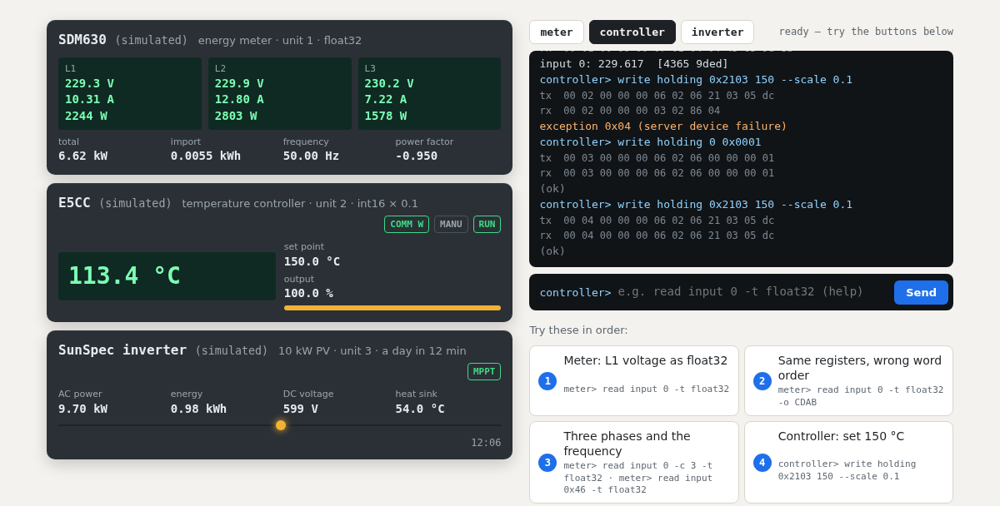

L1– V– A– W
L2– V– A– W
L3– V– A– W
total–
import–
frequency–
power factor–
powering up…
modbus-sim · open source
modbus-sim simulates Modbus devices that behave. Below are three of them, built from the published register maps of real products: an energy meter, a temperature controller and a PV inverter. Read them, write to them, break them. The real simulator runs right here in your browser.
powering up…
powering up…
powering up…
Try these in order:
Break something:
The live demo could not start here.
This is what it looks like. Everything below works the same with pip install modbus-sim.

Every command above became a real Modbus TCP frame (the tx and rx lines)
and went through the same code that answers on a network port. modbus-sim normally runs on your
laptop or in CI and speaks Modbus TCP, RTU over TCP and RTU on a serial line. The devices
behave: the meter's counters count, the controller heats towards its set point, the inverter
follows the sun. And they keep the details that break integrations: word order, scale factors,
gaps in the map, write protection, exception codes.
The three profiles follow public documentation: the Eastron SDM630 Modbus protocol, Omron's E5CC communications manual and the SunSpec model definitions. Where they simplify, the README says so.
pip install modbus-sim
modbus-sim serve --bench real-devices.yaml # the bench from this pagefrom pymodbus.client import ModbusTcpClient
c = ModbusTcpClient("127.0.0.1", port=5020)
c.connect()
r = c.read_input_registers(0, count=2, device_id=1) # SDM630: L1 voltage
print(c.convert_from_registers(r.registers, c.DATATYPE.FLOAT32)) # 230.1
r = c.write_register(0x2103, 1500, device_id=2) # E5CC: set point 150.0
print(r.exception_code) # 4: writing is off
c.write_register(0x0000, 0x0001, device_id=2) # communications writing on
c.write_register(0x2103, 1500, device_id=2) # now it worksThe bench file is examples/real-devices.yaml.
modbus_bench fixture starts devices for a test run.modbus-sim map prints the register map.